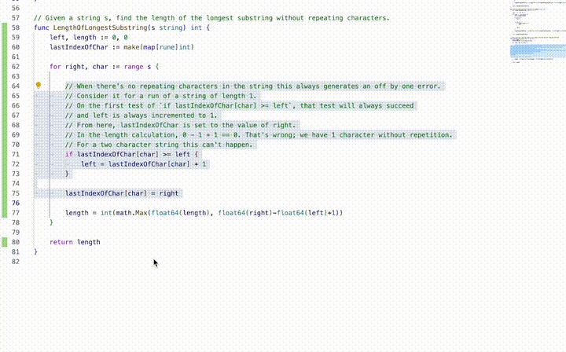

Sliding Window 2: Length of Longest Substring Without Repeating Characters
To get past my previous problem understanding sliding windows, I've kept working on them.
Given a string s, find the length of the longest substring without repeating characters.
The puzzle has a strict limit for defining how to proeed: no character can appear more than once. This kind of condition being checked repeatedly over the length of an array is asking for sliding windows.
Identifying this was helped by getting this from the "sliding window" section of the leetcode problems.
Speed Run

Below is the first iteration of the code above. It's not my first version, but you can see the flaw I mentioned in the last post,
that I'm using if to try and show the computer what to do, rather than just telling it the algorithm.
Now, in writing the big comment in there, I started seeing my error.
// Given a string s, find the length of the longest substring without repeating characters.
func LengthOfLongestSubstring(s string) int {
left, length := 0, 0
lastIndexOfChar := make(map[rune]int)
for right, char := range s {
// When there's no repeating characters in the string this always generates an off by one error.
// Consider it for a run of a string of length 1.
// On the first test of `if lastIndexOfChar[char] >= left`, that test will always succeed
// and left is always incremented to 1.
// From here, lastIndexOfChar is set to the value of right.
// In the length calculation, 0 - 1 + 1 == 0. That's wrong; we have 1 character without repetition.
// For a two character string this can't happen.
if lastIndexOfChar[char] >= left {
left = lastIndexOfChar[char] + 1
}
lastIndexOfChar[char] = right
length = int(math.Max(float64(length), float64(right)-float64(left)+1))
}
return length
}
Learning is easier when I stop coding and start thinking, and I did that above by trying to explain the code in the comment there.
Once I had done that, I saw the failure case clearly and wrote two tests for it: the failure case was any string that didn't contain a repeating character.
Here's the solution I found eventually. You can see in the gif above that I actually found a surprisingly similar piece of code from leetcode's submitted samples; that
was entirely because I knew I had something wrong but couldn't see it. It turned out I thought I had written for but had actually retained if
even though I knew that wasn't what was needed.
func LengthOfLongestSubstring(s string) int {
left, length := 0, 0
countOfChars := make(map[rune]int)
for right, char := range s {
countOfChars[char]++
for countOfChars[char] > 1 {
leftChar := rune(s[left])
countOfChars[leftChar]--
left++
}
length = max(length, right-left+1)
}
return length
}